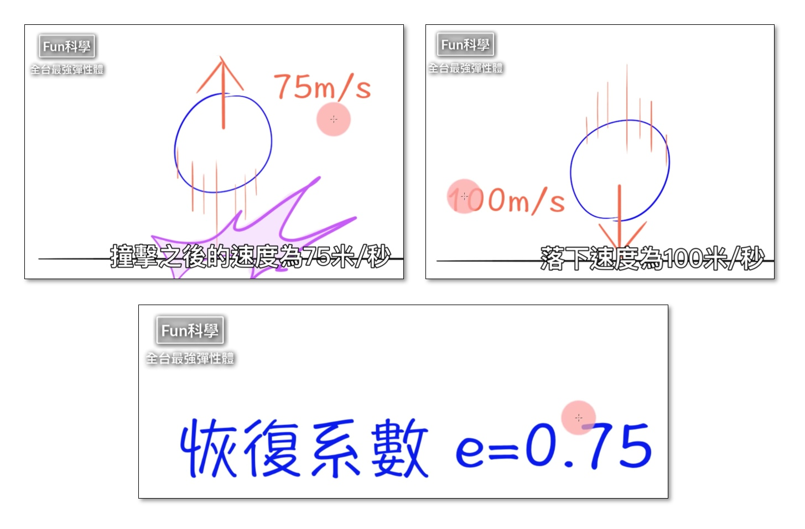
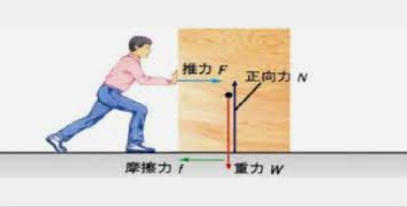

📚 力與運動遊樂場
電腦除了計算，也可以模擬科學實驗，幫助學習者理解概念。
讓我們使用Py4t來進行各種有趣的 力與運動程式模擬 吧！
相信你在體驗之後，未來學習相關的自然課或理化課時，就會更有 學習動力。
📕 球的彈性
很多同學下課時喜歡打球，球能做出各種不同的彈跳，彈性是什麼？彈性可以測量嗎？

-
(圖片來源1)
▪️ 新增圓球
利用基本的物理學習模組來產生物理舞台，按下滑鼠後可以新增圓球。

一起動手來寫程式吧！
Py4t範例程式 新增圓球
▪️ 恢復係數
如何知道一顆球的彈性好不好呢？
恢復係數可以衡量兩個物體在碰撞後的反彈程度。
- 
- (圖片來源2)
讓我們用程式來模擬不同彈性的球吧！
Py4t範例程式 恢復係數
▪️ 超強彈性體
將兩顆很有彈性的球互相碰撞，會發生什麼事？

- (圖片來源2)
兩顆很有彈性的球在一起，下方的球數倍大於上方的球，就可以組成超越原本的彈性體。
有沒有覺得很神奇？讓我們用程式來模擬看看吧！
Py4t範例程式 超強彈性體
更多練習
影片中有3顆球的實驗，請你試著改寫程式，讓大、中、小球組成超強彈性體吧。
補充資料
超強彈性體的原理是什麼？請參考 維基百科: 彈性碰撞
📒 力與斜面
溜滑梯的傾斜度不同，溜起來的感覺也不同。

-
(圖片來源3)
▪️ 新增球與斜面
用斜面來模擬溜滑梯，在程式中要如何做出不同的傾斜度呢？

Py4t物理學習模組內建了地形的輔助功能，操作如下圖：

動手做做看，建立不同的斜面。
Py4t範例程式 新增球與斜面
▪️ 速度比較
球在不同的斜面落下，會怎樣呢？

用程式來模擬看看。
Py4t範例程式 速度比較
▪️ 摩擦力
摩擦力作用於物體的相反方向。
- 
-
(圖片來源4)
用程式來模擬看看。
Py4t範例程式 摩擦力
▪️ 施加力量
衝上斜坡時，會發生什麼事？
用程式來模擬看看。
Py4t範例程式 施力
📙 彈性排列
什麼是繩波？
讓我們用多顆球的排列做出類似繩波的效果。
▪️ 固定球數
如何一次產生多顆球並產生有變化的彈跳呢？

利用之前的恢復係數，讓我們來實作程式吧！
Py4t範例程式 固定球數
▪️ 變數模式識別
如果要從10顆球，可以隨意調整成20或40或80顆，程式要如何寫呢？
識別變數的模式，找出各個變數之間的關係！

Py4t範例程式 變數模式識別
▪️ 不同波動變化
利用不同的彈性排列變化，來做出不同的效果吧
Py4t範例程式 不同波動變化
⭐ 專題：重力控制模擬
重力是什麼？如果有一天重力消失了會如何？
除非我們到外太空，不然在地球上很難進行重力的實驗。
不過我們可以經由物理程式的模擬，做出無重力，甚至是重力反轉的現象。
以下讓我們一步步探討來實做出重力模擬的程式。
▪️ 慣性運動
- 筆要如何才能掉進罐子呢？
什麼是慣性定律呢？
用程式來模擬慣性吧。
Py4t範例程式 施力
▪️ 拋體運動
有看過推鉛球的運動嗎？
鉛球被推出時，為什麼在空中的軌跡是拋物線？
用程式來模擬拋體運動吧。
Py4t範例程式 拋體運動
▪️ 重力搬運
在國際太空站的趣味奧運比賽。
無重力漂浮是不是很特別。 用程式來模擬重力的控制吧。
Py4t範例程式 重力搬運
更多練習
範例程式中的方塊是由原點發射的，請修改程式，改成方塊會依滑鼠位置放置，但會有隨機的轉動及速度，類似太空中物體的漂浮，你有信心挑戰看看嗎？
(提示：需使用随機模組，随機決定方塊的速度及角速度)。
-
維基百科 https://zh.wikipedia.org/wiki/File:%E6%96%B0%E5%BB%BA%E4%B8%AD%E7%B1%83%E7%90%83%E5%A0%B420211110.jpg ↩
-
引用自【Fun科學】超彈力橡皮筋球 https://www.youtube.com/watch?v=_RWqefx0vAg ↩↩
-
引用自維基百科 https://zh.wikipedia.org/wiki/File:葫蘆埤自然公園溜滑梯.jpg ↩
-
引用自中學生網站 https://www.shs.edu.tw/works/essay/2011/03/2011033016033626.pdf ↩